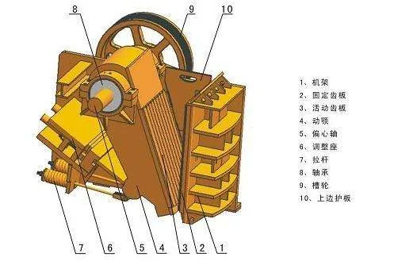

| 型号 | 耐磨件 |
|---|---|
| 型号 | ККД-900 to ККД-1500 |
| 耐磨件 | Mantles, Concaves, Feed cones |
| 型号 | rdox 400, rdox 500 |
| 型号 | rdox 500, rdox 400 |
| 材料牌号 | Hardox 500, 09Г2С, Hardox 400 |
采用优质耐磨合金制造，包括高锰钢、铬钼合金钢和高铬铸铁。
ККД-900 to ККД-1500
轧臼壁、破碎壁、给料锥
UZTM（乌拉尔重机）KKD系列旋回破碎机主要破碎面；俄标初碎用于铁矿石和有色金属矿
| Grade | C | Si | Mn | Cr | Mo | Ni |
|---|---|---|---|---|---|---|
| Mn18Cr2 | 1.05-1.35 | ≤1.0 | 16.0-19.0 | 1.5-2.5 | — | — |
更高锰含量提供更深的加工硬化层；在高压缩工况下使用寿命比Mn13长20-30%
| Grade | C | Si | Mn | Cr | Mo | Ni |
|---|---|---|---|---|---|---|
| Mn13Cr2 | 1.05-1.20 | ≤1.0 | 11.5-14.0 | 1.5-2.5 | — | — |
优异的加工硬化能力；在冲击载荷下表面硬度持续提升，适用于中高冲击破碎工况
KKD破碎机固定破碎环；GOST标准锰钢；分段设计便于维护
| Grade | C | Si | Mn | Cr | Mo | Ni |
|---|---|---|---|---|---|---|
| Mn18Cr2 | 1.05-1.35 | ≤1.0 | 16.0-19.0 | 1.5-2.5 | — | — |
更高锰含量提供更深的加工硬化层；在高压缩工况下使用寿命比Mn13长20-30%
KKD旋回破碗形壁段；Mn22Cr2Mo选项用于俄罗斯特大型矿山初碎
| Grade | C | Si | Mn | Cr |
|---|---|---|---|---|
| Mn18Cr2 | 1.05-1.35 | ≤1.0 | 16.0-19.0 | 1.5-2.5 |
更深的加工硬化层；高压缩工况下比Mn13寿命长20-30%
| Grade | C | Si | Mn | Cr | Mo |
|---|---|---|---|---|---|
| Mn22Cr2Mo | 1.10-1.40 | ≤0.8 | 20.0-24.0 | 1.8-2.5 | 0.3-0.6 |
最强加工硬化能力；极端冲击和高压缩破碎最佳选择；比Mn13寿命长40-60%